Sphinx+Eclipse環境構築メモ¶
Sphinx+Eclipse環境で快適なドキュメントワークを実現する。
| 作成日: | 2018/07/17 |
|---|
1. Pythonのインストール¶
Sphinxをインストールする前にPythonのインストールが必要。すでにインストール済みの場合は作業の必要なし。 公式のPythonインストーラを使うより、Pythonディストリビューションの”Anaconda”を使うことをおすすめする。 Anacondaだとデータサイエンス系に必要なライブラリもまとめてインストールすることが可能。 後になってAnacondaにしておけば！となったときに面倒なため最初からAnacondaにする。 とにかく、AnacondaでPython環境を入れよう。https://www.anaconda.com/download/#windows
★注意！：Anacondaをインストールするとき、PATH(環境変数)を自動的に追加するチェックボックスは忘れなくチェックしておく。その他はデフォルトのままで問題ない。
インストールが完了したら、pythonがちゃんとインスコされているかバージョンを確認してみる。
$python -V
Python 3.6.5 :: Anaconda, Inc.
2. Sphinxのインストール¶
Pythonがインストールできたら、次はSphinxをインストールする。Pythonのpipコマンドでインストール。 環境変数にはAnacondaインスコ時に自動的に追加されているはずなので、コマンドプロンプトに直接入力。
$pip install sphinx Pillow
ちゃんとインストール完了できたかバージョンを見てみる。
$sphinx-quickstart --version
sphinx-quickstart 1.7.4
では早速ドキュメントのプロジェクトを作ってみる。quickstartの詳細説明(http://sphinx-users.jp/gettingstarted/sphinxquickstart.html)
$sphinx-quickstart %USERPROFILE%\SphinxProjects\SampleDoc
{kind=link}
{kind=link}
上記実行すると色々と質問されるが、Project NameとAuthor Name以外はEnterキーでスキップしてOK。これでユーザープロファイル下にSphinxProjectsディレクトリをつくり、その中にプロジェクト”SampleDoc”の作成が完了。
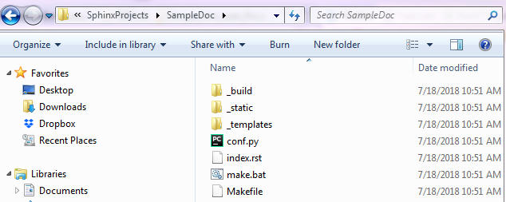{kind=link}
3. Eclipseのインストール¶
この時点で、テキストエディタとコマンドプロンプトでSphinxのドキュメント作成を行うことは可能。 しかし、もう少し我慢して一手間かけて統合開発環境 Eclipseで快適な環境にしよう。 Eclipseのインストールして初期設定までは行おう⇒手順リンク(https://markinada.github.io/DocEclipseHowTo/)
4. Eclipseの設定¶
まずは必要なプラグインが2つあるのでインストールする。
{kind=link}
{kind=link}
{kind=link}
5. Buildしてhtml生成¶
5-1. Sphinxプロジェクトの読み込み¶
File -> New -> Other から、以下のようにプロジェクトを読み込む
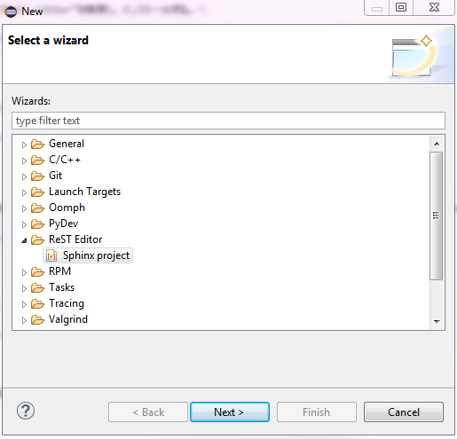 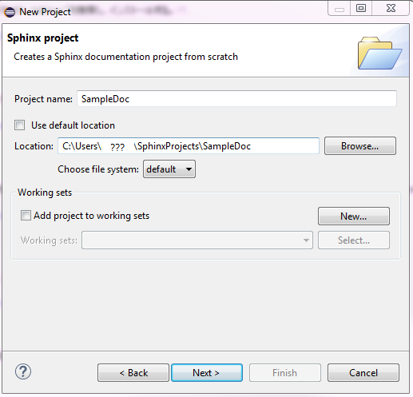 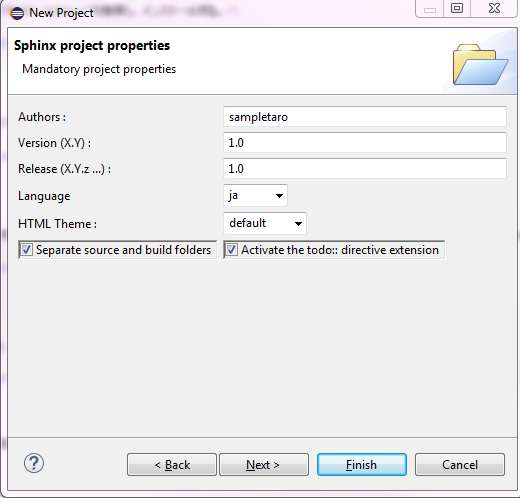{kind=link}
{kind=link}
{kind=link}
最後にconf.pyとindex.rstをsourceディレクトリ内に移動し、上書きする。 ※注意！！ すでにsourceディレクトリにconf.pyとindex.rstがある状態で読み込みをこれらが初期化されてしまいます！
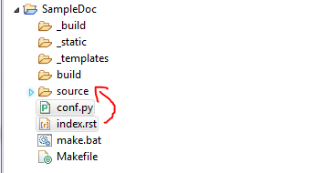{kind=link}
{kind=link}
{kind=link}
{kind=link}
{kind=link}
{kind=link}
6. おすすめの設定¶
6-1. blockdiag¶
シーケンス図やフローチャートがかけるようになる。
$pip install sphinxcontrib.blockdiag blockdiag
以下のようにconf.pyを編集して拡張子の追加とフォントの指定を行う。
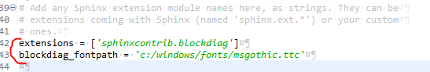{kind=link}
{kind=link}
{kind=link}
7. ドキュメントを書いてみる¶
まずは、Textファイルをsourceディレクトリ内に作成する。
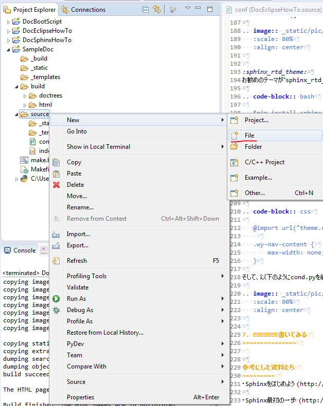 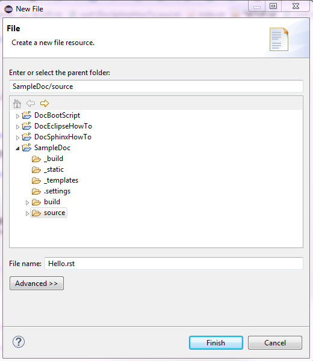{kind=link}
{kind=link}
作成したら以下のようにindexのTreeにファイルを追加する。
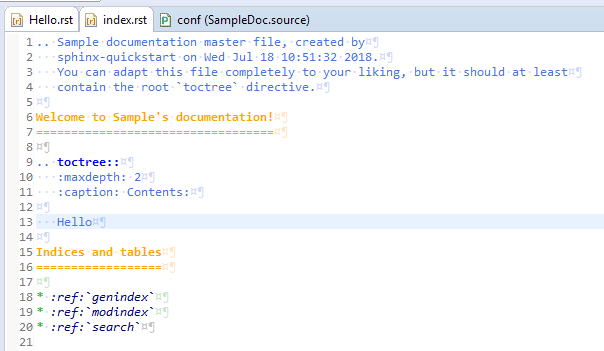{kind=link}
試しに以下のようなTextを書いてみる。
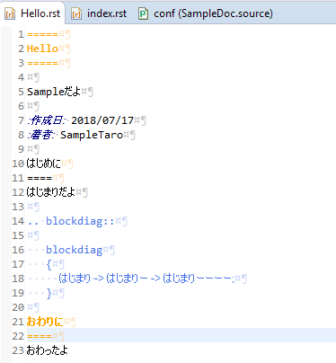{kind=link}
Run(ビルド)してhtmlファイルを開くと・・・・。
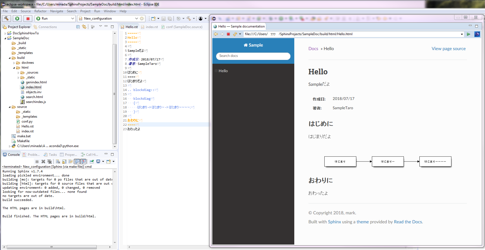{kind=link}
これで作業終了。あとは コード書く⇒ビルド⇒htmlの確認 を繰り返してドキュメントを書いていく。
htmlのソースが表示されてしまう場合は、html上で右クリックし、Open withでWeb Browserから開こう。
もしReSTエディターで一部文字化けが発生する場合、Window->Prederences->General->Apearance->Colors and FontsでFontを変更する。
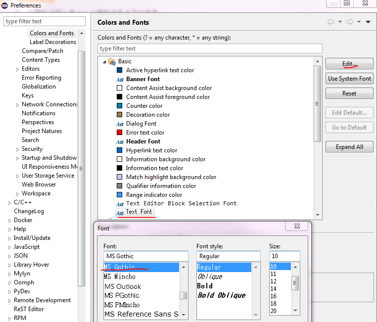{kind=link}
8. GitHubで作成したドキュメントを公開¶
GitHubの使い方はまたいつか詳しく説明しようと思う。 とりあえず今回は公開の仕方のみ説明。
実際に私が公開しているGitHubのページを使って説明する。リンク（https://github.com/MarkInada/DocSphinxHowTo）
まずbuild/htmlディレクトリをコピーし、ディレクトリ名を”docs”にする。docs内に”.nojekyll”という中身のないファイルを作る。
完了したらこのdocsディレクトリをリポジトリのプロジェクトルートにプッシュする。次にGitHubプロジェクトのSettingに行く。
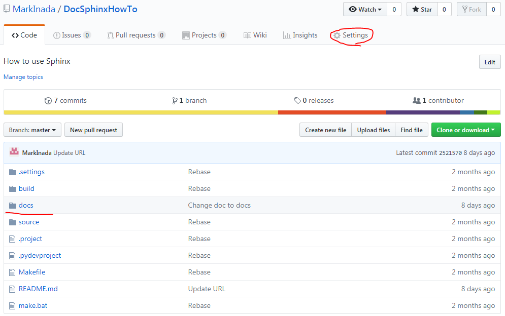{kind=link}
Sourceで master branch /docs folder を選択し、Saveすると docs/index.html が公開される。
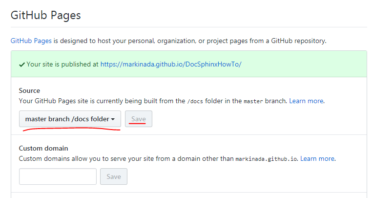{kind=link}
公開先のアドレスは、https://[ユーザー名].github.io/[リポジトリ名]/
README.md にURLを記載しておくと、以下のように表示され、便利である。
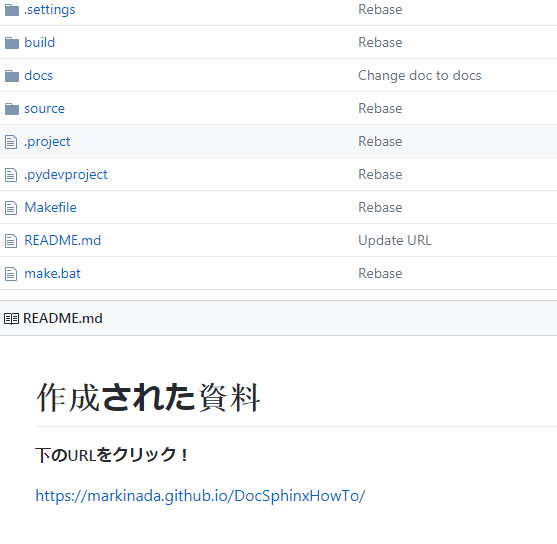{kind=link}
引用した資料たち¶
・Sphinxをはじめよう (http://sphinx-users.jp/gettingstarted/)
・Sphinx最初の一歩 (http://www.sphinx-doc.org/ja/1.7/tutorial.html#install-sphinx)
・reStructured Text in Eclipse (https://www.slideshare.net/tcalmant/rest-editor-eclipse-demo-camp-grenoble-2011)
・Sphinx再入門 (http://muraoka-edo.hatenablog.com/entry/2015/01/18/171522)
・sphinx_rtd_theme をカスタマイズする (http://kuttsun.blogspot.com/2016/11/sphinx-sphinxrtdtheme.html)
・blockdiag (http://blockdiag.com/ja/blockdiag/introduction.html)
・GitHub Pagesで自分の作ったサイトを公開する (https://qiita.com/nagisa88/items/91c4f57c784842f365d7)